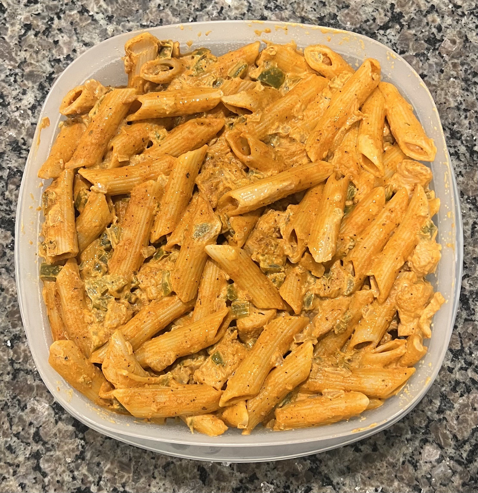

Home
Cajun Pasta

Description
This spicy cajun chicken pasta is sure to tantalize your tastebuds
without taking all day to prepare or breaking the bank!
Ingredients
- 1½-2 lbs. of bonesless skinless chicken breast
- 1 medium white/sweet onion
- 1 large green bell pepper
- 2 large celery sticks
- ¼ cup of tomato sauce
- 1 lb. dried penne pasta
- ¼ cup cajun seasoning
- 1 tbsp. pepper
- 1 gallon water
- 3 tbsp. olive oil
- salt to taste
Steps
Pasta should be cooked at the same time as the Chicken and Sauce.
Sauce should be prepped before chicken is done cooking, but not cooked
until after the chicken is done.
Pasta
- Put water in medium to large pot set to the highest heat
- Add a generous amount of salt. More than you think.
- Once boiling, add pasta to pot.
- Stir immediately, then once every 5 minutes until cooked
- Check you pasta brand's box for estimated cooking time. Once that
time has passed, take a bite of a noodle to see if it's done.
- Strain the pasta and keep it to the side
Chicken
- Cut chicken into bite size chunks.
- Place the chicken in a bowl along with 1 tbsp. salt and all cajun seasoning.
- Mix until seasoning is evenly distributed.
- Set a large saute pan on medium-high heat (7 out of 10) and add 1 tbsp. olive oil
- Once pan is at about 200°C, add the chicken in, evenly spreading on the surface
of the pan.
- After about 3½ minutes, flip all the chicken pieces.
- After another 3 minutes, taste to ensure cookness, and remove from pan into a bowl.
Sauce